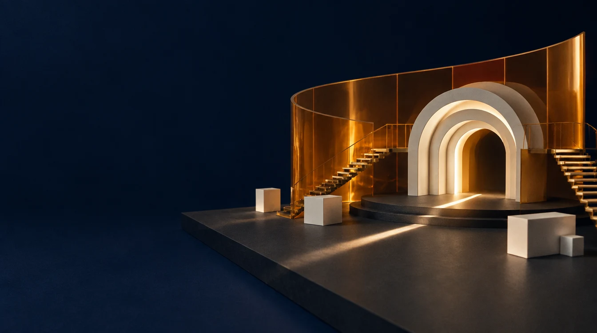
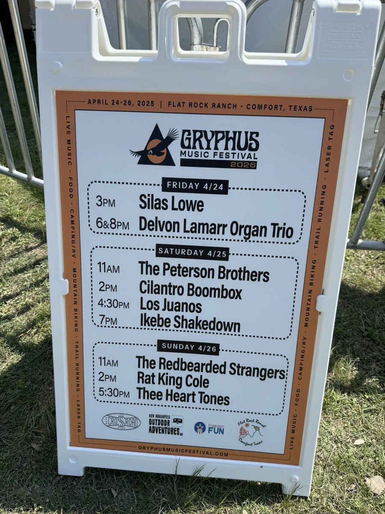
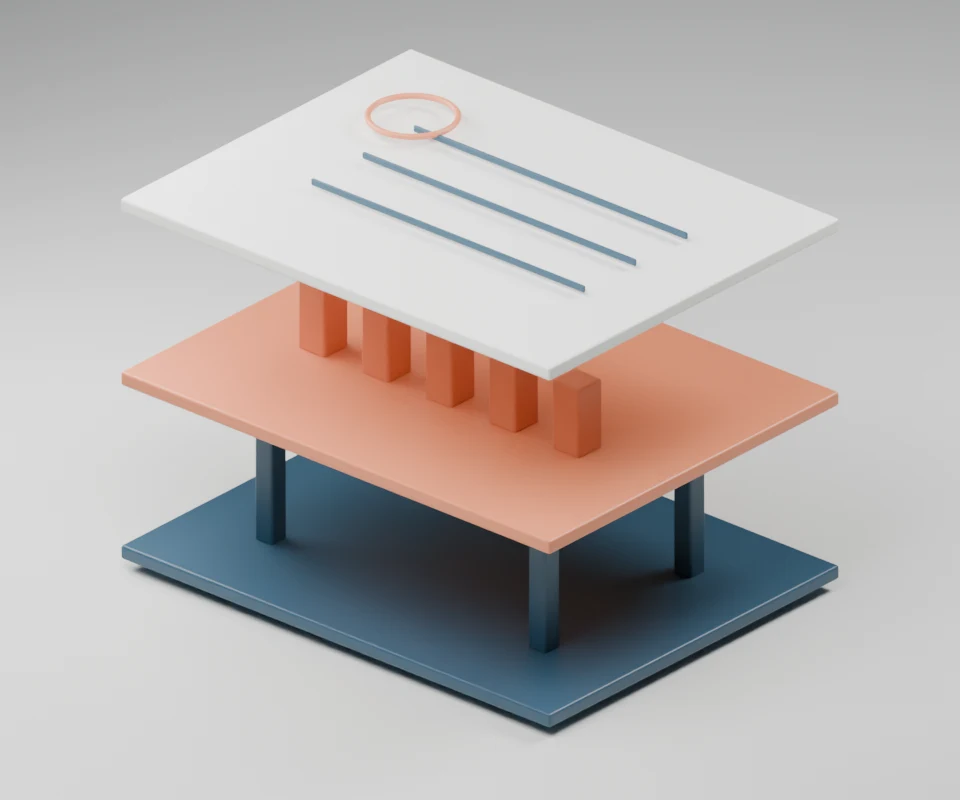
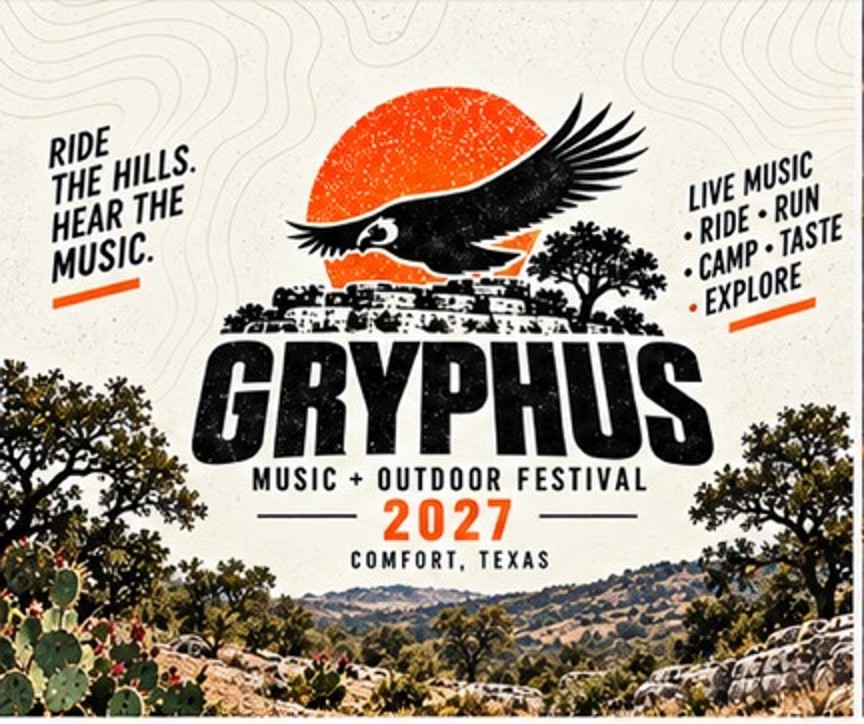

Start with the why.
What should someone feel, do or remember? Shape the strategy and the experience around that.
Founder & Principal, Maven Collective
Since March 2026
Experiential strategy.
Creative leadership.
Production, all the way through.

Different audiences. Different worlds.
A throughline of people, purpose and production.
Two nights around the 2025 European Club Association General Assembly. Cale led partner selection, strategy, creative development and end-to-end production: the opening at Villa Miani, where the new European Football Clubs identity was revealed, and the closing at the Baths of Caracalla with Damiano David. Event delivery by STS Communication; lighting design by Sergio Cattaneo.
A VR escape room, a custom AR adventure and a 6,000-plus square foot set built with the show's real props. The project, by Double A Labs for AT&T Audience Network, was an Adweek Experiential Awards finalist (2019).
Four days of music, gaming, AMAs and livestreams. Cale produced the venue, talent, experience, staging, AV, security, livestream and sponsors. Artists on the program included Snoop Dogg, Grandmaster Flash and A$AP Mob.
A restaurant turned into nine places to meet Watson: apps, games, VR cycling and mixology. 9,210 visitors, reported by GPJ.
A friend’s ranch party became a three-day gathering in the Hill Country. The 2026 program brought together nine acts and ten sets, with music, food, camping and outdoor experiences.

Roles are drawn from Cale’s public profile. Each project links to its own evidence. These are team achievements, with Cale’s role stated alongside the work.
The approach

An original spatial study of the production process, made in Blender.
What should someone feel, do or remember? Shape the strategy and the experience around that.
Bring the right creative, technical and production people into the room. Give them a clear direction and the room to do good work.
Connect the big idea to the small details: show flow, partners, budgets, operations and the moment it all becomes live.

Gordon and Cale at Gryphus, 2026.
The people are the point.
Gryphus is one of them. A gathering in the Hill Country, built around music, the outdoors and being there together.

Cale’s own mark for Gryphus 2027.
“Ride the hills. Hear the music.”
Experience across creative production,
brand experiences and operations.
Founder & Principal
Senior Manager, Special Projects; then Director of Operations
EFC Rome 2025, among special projects
VP, Experiential Services
Selected programs from his portfolio: Austin Trail of Lights, UT Bevo Blvd., Austin Gamblers Fan Fest, Live in the Vineyard, Elevation Beaver Creek, Saucony House, Lucchese
Regional Director of Events
Senior Producer
Mr. Mercedes at Comic-Con; Twitch x Reddit IRL at SXSW
Producer, Integrated Experience Marketing
IBM Cognitive Studio at SXSW; TED@IBM (October 2015)
Director of Marketing and Events
Led the app's UX and UI concept and development through launch, and built the customer support function
Head of Projects and Client Services
Events and Marketing Manager
Regional experiential programs across five states
Executive Producer
Year not confirmed
Career dates and roles: Cale’s public experience record. WAVE XR launch is supported by Gordon’s firsthand knowledge; year unconfirmed.
Start a conversation
An early idea is a perfectly good place to start.
A spark, a possibility, a “what if.” Start with what you want people to experience.
Write to CaleOpens your email app with a starting point. You choose what to write and send.
April 24–26, 2026, Flat Rock Ranch, Comfort, Texas. Executive Producer: Cale Yarborough.
| Day | Call | Set |
|---|---|---|
| Fri 4/24 | 3:00 PM | Silas Lowe |
| 6:00 + 8:00 PM | Delvon Lamarr Organ Trio, two sets | |
| Sat 4/25 | 11:00 AM | The Peterson Brothers |
| 2:00 PM | Cilantro Boombox | |
| 4:30 PM | Los Juanos | |
| 7:00 PM | Ikebe Shakedown | |
| Sun 4/26 | 11:00 AM | The Redbearded Strangers |
| 2:00 PM | Rat King Cole | |
| 5:30 PM | Thee Heart Tones |
Transcribed from Gordon’s photograph of the 2026 schedule sign. Delvon Lamarr Organ Trio played twice. The sign itself misprinted the year at the top.